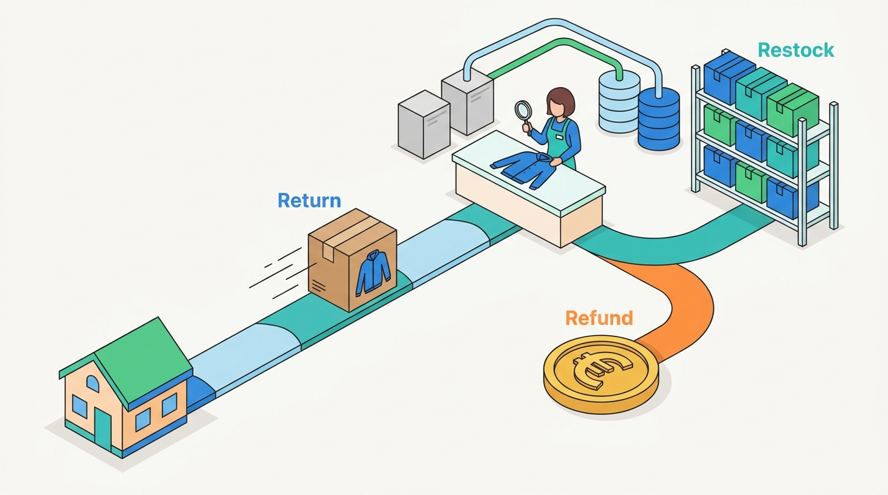

Part IV — FULFILLMENT: From Warehouse to Doorstep and Back
The Way Back: Returns, Exchanges, Refunds and Reverse Logistics
AI-assisted: researched and written with Claude Code, images generated with the Gemini API. How this works

Part IV — FULFILLMENT: From Warehouse to Doorstep and Back
AI-assisted: researched and written with Claude Code, images generated with the Gemini API. How this works
